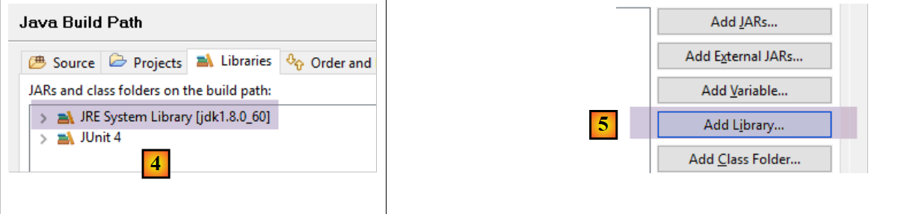
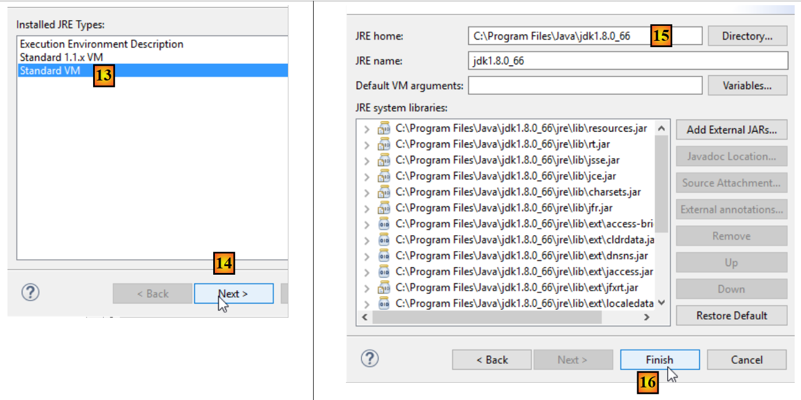

3. [TD]: Clases
Palabras clave: clase, interfaz, herencia, excepción, polimorfismo
Lecturas recomendadas:
- apartados 2.1, 2.2, 2.4 y 2.7 del capítulo 2 de [ref1]: Clases e interfaces
- apartados 3.3 (clase String), 3.5 (clase ArrayList) y 3.6 (clase Arrays)
En la parte 1 del ejercicio ELECTIONS no se utilizó ninguna clase. Se construyó una solución tal y como se habría hecho en lenguaje C. Ahora introducimos el concepto de clase en Java.
3.1. Support
 |  |
La carpeta [support / chap-03] contiene el proyecto de Eclipse de este capítulo.
A partir de ahora trabajaremos con la versión 1.8 de JDK, ya que algunos de los proyectos que veremos a continuación requieren esta versión de JDK. Para saber qué versión de JDK se utiliza, sigue estos pasos:
 |
 |
- en [4], el JRE (Java Runtime Environment) utilizado. Este JRE es, en realidad, un JDK (Java Development Kit), en este caso [jdk1.8.0_60]. Si no se trata de un JDK o si tiene una versión inferior a la 1.8, siga estos pasos: [5-21];
 |
- a [8], el JRE que Eclipse utiliza actualmente por defecto;
- por [11], los distintos JDK y JRE que Eclipse reconoce actualmente;
 |
- en [15], elige un JDK en lugar de un JRE. Este documento utiliza proyectos Maven que necesitan un JDK;
 |
 |
- en [21], tenemos un JDK de versión >=1.8;
- en [22-23], acceda a las facetas (diferentes vistas de un mismo proyecto de Eclipse) del proyecto;
 |
- en [24], comprueba que utilizas una versión de Java >=1.8;
3.2. La clase [ListeElectorale]
En lenguaje C, probablemente habríamos utilizado una estructura para representar una lista de candidatos a las elecciones. Podría haber tenido la siguiente forma:
El concepto de «estructura» no existe en el lenguaje Java. Hay que sustituirlo por el de «clase». Por lo tanto, decidimos crear una clase para almacenar la información sobre una lista de candidatos. Esta tendría la estructura siguiente:
package istia.st.elections;
public class ListeElectorale {
/**
* identité de la liste
*/
private int id;
/**
* nom de la liste
*/
private String nom;
/**
* nombre de voix de la liste
*/
private int voix;
/**
* nombre de sièges de la liste
*/
private int sieges;
/**
* indique si la liste est éliminée ou non
*/
private boolean elimine;
/**
* constructeur par défaut
*/
public ListeElectorale() {
}
/**
*
* @param nom String : le nom de la liste
* @param voix int : son nombre de voix
* @param sieges int : son nombre de sieges
* @param elimine boolean : son état éliminé ou non
*/
public ListeElectorale(int id,String nom, int voix, int sieges, boolean elimine) {
...
}
/**
*
* @return int : l'identifiant de la liste
*/
public int getId() {
...
}
/**
* initialise l'identifiant de liste
* @param id int : identifiant de la liste
* @throws ElectionsException si id<1
*/
public void setId(int id) {
...
}
/**
*
* @return String : le nom de la liste
*/
public String getNom() {
...
}
/**
* initialise le nom de la liste
* @param nom String : nom de la liste
* @throws ElectionsException si le nom est vide ou blanc
*/
public void setNom(String nom) {
...
}
/**
*
* @return int : le nombre de voix de la liste
*/
public int getVoix() {
...
}
/**
* initialise le nombre de voix de la liste
* @param voix int : le nombre de voix de la liste
*/
public void setVoix(int voix) {
...
}
/**
*
* @return int : le nombre de sièges de la liste
*/
public int getSieges() {
...
}
/**
* fixe le nombre de sièges de la liste
* @param sieges int : le nombre de sièges de la liste
*/
public void setSieges(int sieges) {
...
}
/**
*
* @return boolean : valeur du champ elimine
*/
public boolean isElimine() {
...
}
/**
*
* @param sieges int
*/
public void setElimine(boolean elimine) {
...
}
/**
*
* @return String : identité de la liste électorale
*/
public String toString() {
...
}
}
- línea 8: número que identifica una lista de forma única. No es imprescindible aquí, pero se ha previsto para su uso futuro.
- línea 13: el nombre de la lista.
- línea 17: el número de votos de la lista
- línea 21: el número de escaños de la lista
- línea 25: valor booleano que indica si la lista queda eliminada (porcentaje de votos obtenidos por debajo del umbral electoral) o no.
Cada campo privado denominado [xyz] puede inicializarse mediante un método denominado [setXyz]. El método [getXyz] permite, por su parte, obtener el valor del campo privado [xyz]. En el caso concreto en que [xyz] sea un campo de tipo booleano, el método [getXyz] puede sustituirse por el método [isXyz]. La nomenclatura específica de estos métodos se ajusta a una norma de codificación denominada norma JavaBean. Así, definimos los siguientes métodos públicos:
- getId (línea 48), setId (línea 57)
- getNom (línea 65), setNom (línea 74)
- getVoix (línea 82), setVoix (línea 90)
- getSieges (línea 98), setSieges (línea 106)
- isElimine (línea 114), setElimine (línea 122)
- líneas 30-31: definen un constructor sin parámetros. Este permite crear un objeto [ListeElectorale] sin inicializarlo. Posteriormente, este objeto puede inicializarse mediante los métodos set.
- líneas 40-42: definen un constructor que permite crear un objeto [ListeElectorale] al tiempo que se inicializan sus cinco campos privados.
- Líneas 130-132: definen el método [toString], que devuelve una cadena de caracteres con los valores de los cinco campos del objeto.
Un programa de prueba de la clase ListeElectorale podría ser el siguiente:
package istia.st.elections.tests;
import istia.st.elections.ListeElectorale;
public class MainTest1ListeElectorale {
public static void main(String[] args) {
// creación de una lista electoral
ListeElectorale listeElectorale1 = new ListeElectorale(1, "A", 32000,
0, false);
// Visualización de la identidad de la lista
System.out.println("listeElectorale1=" + listeElectorale1);
// modificación del número de escaños
listeElectorale1.setSieges(2);
// Visualización de la identidad de la lista 1
System.out.println("listeElectorale1=" + listeElectorale1);
// una nueva lista electoral
ListeElectorale listeElectorale2 = listeElectorale1;
// visualización de la identidad de la lista 2
System.out.println("listeElectorale2=" + listeElectorale2);
// modificación del número de escaños
listeElectorale2.setSieges(3);
// visualización de la identidad de las dos listas
System.out.println("listeElectorale2=" + listeElectorale2);
System.out.println("listeElectorale1=" + listeElectorale1);
}
}
El entorno Eclipse de esta prueba podría ser el siguiente:
 |
- [1]: el proyecto se llama [elections-02A]
- [2]: la aplicación se incluirá en un paquete, en este caso [istia.st.elections]
- [3]: [ListeElectorale.java] es el código fuente de la clase [ListeElectorale]
- [4]: las clases de prueba se colocarán en un paquete, en este caso [istia.st.elections.tests]
- [5]: la clase de prueba [MainTest1ListeElectorale]
La salida en pantalla obtenida tras ejecutar el programa anterior es la siguiente:

Tarea: con la ayuda de lo anterior, completa el código de la clase ListeElectorale.
3.3. Creación de una clase de excepción [ElectionsException]
Entre las diferentes clases de excepción del lenguaje Java, hay una llamada [RuntimeException]. Esta clase deriva de la clase [Exception], raíz de todas las clases de excepción. La particularidad de las instancias de [RuntimeException] o de las instancias derivadas es que no es obligatorio declararlas ni gestionarlas. Se denominan excepciones no controladas.
Veamos un primer ejemplo. La clase [BufferedReader] es una clase cuyas instancias permiten leer líneas de texto en un flujo de datos. Posee un método [readLine] cuya firma es la siguiente:
Se observa que el método puede lanzar una excepción de tipo [IOException]. El árbol de esta clase es el siguiente:
La clase [IOException] deriva de la clase [Exception] (línea 3). El compilador nos obliga a gestionar y declarar las excepciones de tipo [java.lang.Exception] o derivadas (excepto la rama [RuntimeException], que presentaremos más adelante). Así, para leer una línea de texto introducida mediante el teclado, nos veremos obligados a escribir algo como:
Veamos otro ejemplo. Para convertir una cadena en un entero, podemos utilizar el método estático [Integer.parseInt], cuya firma es la siguiente:
El argumento [s] es la cadena de caracteres que se va a convertir en un entero. Vemos que el método puede lanzar una excepción de tipo [NumberFormatException]. El árbol de esta clase es el siguiente:
La clase [NumberFormatException] deriva de la clase [RuntimeException] (línea 4). El compilador no nos obliga a gestionar ni a declarar las excepciones de tipo [java.lang.RuntimeException] o derivadas. Así, podremos escribir algo como:
No estamos obligados a incluir una cláusula [try - catch] para gestionar la posible excepción generada por [Integer.parseInt] (línea 9).
Crear y utilizar clases de excepción derivadas de [RuntimeException] tiene sus ventajas e inconvenientes:
- en cuanto a las ventajas: el código es más ligero
- en cuanto a las desventajas: podemos volver a los métodos del C, donde cada función devuelve un código de error que poca gente utiliza, precisamente para tener un código más ligero. Cuando se produce un error de este tipo sin gestionar, el programa se cuelga, normalmente de forma poco elegante.
Decidimos crear una clase especial que agrupe todas las excepciones que puedan surgir en nuestra aplicación ELECTIONS. Se llamará [ElectionsException] y derivará de la clase [RuntimeException]. Su código es el siguiente:
package istia.st.elections;
public class ElectionsException extends RuntimeException {
private static final long serialVersionUID = 1L;
public ElectionsException() {
super();
}
public ElectionsException(String message) {
super(message);
}
public ElectionsException(Throwable cause) {
super(cause);
}
public ElectionsException(String message, Throwable cause) {
super(message, cause);
}
}
- línea 1: colocamos la clase en el paquete [istia.st.elections];
- línea 3: la clase deriva de [RuntimeException]. Por lo tanto, no está controlada;
- línea 4: un identificador de serialización que podemos ignorar por el momento;
- En nuestra aplicación utilizaremos dos tipos de constructores:
- el clásico de las líneas 15-17, como se muestra a continuación:
En este caso, el método que llama a otro método que lanza dicha excepción puede gestionarla de la siguiente manera:
// prueba de excepción
try {
listeElectorale2.setSieges(-3);
} catch (ElectionsException ex) {
System.err.println("L'exception suivante s'est produite : ["
+ ex.toString() + "]");
}
- (continuación)
- o el de las líneas 14-20, destinado a reenviar una excepción que ya se ha producido, encapsulándola en una excepción de tipo [ElectionsException]:
try {
...;
} catch (SQLException ex) {
// Encapsulamos la excepción
throw new ElectionsException("erreur de fermeture de la connexion à la BD",ex);
}
Este segundo método tiene la ventaja de conservar la información que pueda contener la primera excepción. En este caso, el método que llama a otro que lanza dicha excepción puede gestionarla de la siguiente manera:
try {
...;
} catch (ElectionsException ex) {
System.out.println(ex.getMessage() + ", Cause : "+ ex.getCause().getMessage());
System.exit(1);
}
Tarea a realizar: modifica el código de la clase ListeElectorale para que los métodos «set» lancen una excepción de tipo [ElectionsException] si la inicialización solicitada es incorrecta, como por ejemplo inicializar el nombre con una cadena vacía.
El proyecto de Eclipse para probar esta nueva versión podría ser el siguiente:
 |
- [1]: el proyecto se llama [elections-02B]
- [2]: la aplicación se encuentra en un paquete, en este caso [istia.st.elections]
- [3]: las clases [ListeElectorale] y [ElectionsException]
- [4]: las clases de prueba se incluyen en un paquete, en este caso [istia.st.elections.tests]
- [5]: la clase de prueba [MainTest1ListeElectorale]
La clase de prueba [MainTest1ListeElectorale], ya analizada, se modifica ligeramente para comprobar los casos de excepción:
package istia.st.elections.tests;
import istia.st.elections.ElectionsException;
import istia.st.elections.ListeElectorale;
public class MainTest1ListeElectorale {
public static void main(String[] args) {
// creación de un censo electoral
ListeElectorale listeElectorale1 = new ListeElectorale(1, "A", 32000,
0, false);
// visualización de la identidad de la lista
System.out.println("listeElectorale1=" + listeElectorale1);
// modificación del número de escaños
listeElectorale1.setSieges(2);
// Visualización de la identidad de la lista 1
System.out.println("listeElectorale1=" + listeElectorale1);
// una nueva lista electoral
ListeElectorale listeElectorale2 = listeElectorale1;
// visualización de la identidad de la lista 2
System.out.println("listeElectorale2=" + listeElectorale2);
// modificación del número de escaños
listeElectorale2.setSieges(3);
// visualización de la identidad de las dos listas
System.out.println("listeElectorale2=" + listeElectorale2);
System.out.println("listeElectorale1=" + listeElectorale1);
// prueba de excepción
try {
listeElectorale2.setSieges(-3);
} catch (ElectionsException ex) {
System.err.println("L'exception suivante s'est produite : ["
+ ex.toString() + "]");
}
}
}
- línea 28: se intenta inicializar el número de asientos con un valor no permitido
- línea 30: si se produce una excepción, se muestra
La ejecución de la prueba arroja los siguientes resultados:

Se observa que la clase [ListeElectorale] generó efectivamente una excepción al intentar inicializar el número de asientos con un valor no válido (línea 28 del código).
3.4. Una clase de prueba unitaria
El tipo de prueba anterior se basa en una verificación visual. Se comprueba que en pantalla se muestra lo esperado. Se trata de un método desaconsejable en el ámbito profesional. Las pruebas deben automatizarse siempre al máximo y tener como objetivo no requerir ninguna intervención humana. De hecho, el ser humano está sujeto a la fatiga y su capacidad para verificar las pruebas se va mermando a lo largo del día.
Una aplicación evoluciona con el tiempo. Con cada cambio, hay que comprobar que la aplicación no sufra una «regresión», c.a.d, y que siga superando las pruebas de correcto funcionamiento que se realizaron durante su desarrollo inicial. A estas pruebas se las denomina pruebas de «no regresión». Una aplicación de cierta envergadura puede requerir cientos de pruebas. De hecho, se prueban todos los métodos de todas las clases de la aplicación. A esto se le llama pruebas unitarias. Estas pueden requerir la participación de muchos desarrolladores si no se han automatizado.
Se han desarrollado herramientas para automatizar las pruebas. Una de ellas se llama [JUnit]. Se trata de una biblioteca de clases destinada a gestionar las pruebas. Vamos a utilizar esta herramienta para probar la clase [ListeElectorale].
Un programa de pruebas JUnit (versiones 4.x) tiene el siguiente formato:
package istia.st.elections.tests;
import org.junit.Assert;
import org.junit.After;
import org.junit.Before;
import org.junit.Test;
public class JUnitEssai {
@Before
public void avant() throws Exception {
System.out.println("tearUp");
}
@After
public void après() throws Exception {
System.out.println("tearDown");
}
@Test
public void t1() {
System.out.println("test1");
Assert.assertEquals(1, 1);
}
@Test
public void t2() {
System.out.println("test2");
Assert.assertEquals(1, 2);
}
}
- línea 1: la clase se ha colocado en el paquete [istia.st.elections.tests];
- línea 11: el método anotado con la anotación [@Before] se ejecuta antes de cada prueba unitaria;
- línea 16: el método anotado con la anotación [@After] se ejecuta después de cada prueba unitaria;
- línea 21: un método anotado con la anotación [@Test] es un método sometido a la prueba unitaria. Los métodos anotados con [@Test] se ejecutarán uno tras otro, salvo que el evaluador indique lo contrario, ya que puede seleccionar él mismo los métodos que desea probar. Antes de cada ejecución de un método [@Test], se ejecuta el método [@Before]. Tras cada ejecución de un método [@Test], se ejecuta el método [@After];
- líneas 22-25: definen un método de prueba [t1];
- línea 18: uno de los métodos [Assert.assert*] que permite verificar aserciones. Existen los siguientes métodos [assert]:
- assertEquals(expresión1, expresión2): comprueba que los valores de ambas expresiones sean iguales. Se aceptan numerosos tipos de expresión (int, String, float, double, boolean, char, short). Si ambas expresiones no son iguales, se lanza una excepción de tipo [AssertionFailedError ],
- assertEquals(real1, real2, delta): comprueba que dos números reales sean iguales con una tolerancia de delta; c.a.d abs(real1 - real2) <= delta. Por ejemplo, se puede escribir assertEquals(real1, real2, 1E-6) para comprobar que dos valores son iguales con una precisión de 10⁻⁶,
- assertEquals(mensaje, expresión1, expresión2) y assertEquals(mensaje, real1, real2, delta) son variantes que permiten especificar el mensaje de error que se asociará a la excepción de tipo [AssertionFailedError] lanzada cuando el método [assertEquals] falla,
- assertNotNull(Object) y assertNotNull(message, Object): comprueba que Object no sea igual a null,
- assertNull(Object) y assertNull(mensaje, Object): comprueban que Object sea igual a null,
- assertSame(Object1, Object2) y assertSame(message, Object1, Object2): comprueba que las referencias Object1 y Object2 apuntan al mismo objeto,
- assertNotSame(Object1, Object2) y assertNotSame(message, Object1, Object2): comprueba que las referencias Object1 y Object2 no apunten al mismo objeto;
- línea 24: esta aserción debe tener éxito;
- línea 30: esta aserción debe fallar;
En el entorno Eclipse, la creación de una clase de prueba JUnit puede realizarse de la siguiente manera:
 |
- [1]: haz clic con el botón derecho del ratón sobre el paquete al que quieras añadir la clase de prueba y, a continuación, selecciona la opción [JUnit / New / JUnit Test Case]
 |
- [1]: selección de una versión JUnit;
- [2]: selección de la carpeta en la que se debe crear la clase de prueba;
- [3]: selección del paquete en el que se debe crear la clase de prueba;
- [4]: nombre de la clase de prueba;
- [5]: selección de los métodos que se incluirán en la clase que se va a generar;
- [6]: se ha generado la clase JUnitEssai
El asistente anterior genera una clase prácticamente vacía:
package istia.st.elections.tests;
import org.junit.Assert;
import org.junit.After;
import org.junit.Before;
public class JUnitEssai {
@Before
public void setUp() throws Exception {
}
@After
public void tearDown() throws Exception {
}
}
Completemos y modifiquemos el código anterior de la siguiente manera:
package istia.st.elections.tests;
import org.junit.Assert;
import org.junit.After;
import org.junit.Before;
import org.junit.Test;
public class JUnitEssai2 {
@Before
public void avant() throws Exception {
System.out.println("tearUp");
}
@After
public void après() throws Exception {
System.out.println("tearDown");
}
@Test
public void t1() {
System.out.println("test1");
Assert.assertEquals(1, 1);
}
@Test
public void t2() {
System.out.println("test2");
Assert.assertEquals(1, 2);
}
}
En Eclipse, al hacer clic con el botón derecho del ratón sobre la clase de prueba y seleccionar la opción [Run as / JUnit test], se puede ejecutar:

Los resultados obtenidos al ejecutar esta prueba son los siguientes:

En el ejemplo anterior, el método [test2] ha fallado. Cada vez que falla una prueba, se le asocia un mensaje de error. En el caso de [test2], es el que se muestra arriba. El mensaje indica el número de línea en la que se produjo el error (línea 30). En la línea 30, la llamada que falló fue:
Assert.assertEquals(1, 2);
El primer parámetro se denomina «valor esperado» y el segundo, «valor real». El mensaje de error de [test2] anterior indica que el valor esperado era 2, pero que el valor real fue 3.
Por último, los mensajes escritos en la consola por los distintos métodos de prueba fueron los siguientes:

Estos mensajes muestran que los métodos [@Before] y [@After] se invocaron correctamente, respectivamente, antes y después de cada método de prueba.
Las clases de prueba no tienen por qué ser escritas necesariamente por los propios desarrolladores. Pueden ser escritas por las personas que han redactado las especificaciones de la aplicación. Algunos métodos de desarrollo, conocidos como TDD (desarrollo basado en pruebas), recomiendan escribir las clases de prueba incluso antes de escribir las clases que se van a probar. Esto permite, en ocasiones, aclarar especificaciones que, de otro modo, podrían interpretarse de varias maneras.
Creemos una prueba JUnit 4, denominada [JUnitTest1ListeElectorale], para la clase [ListeElectorale]. En Eclipse, se procederá tal y como se ha descrito anteriormente:
 |  |
Completamos el código generado por el asistente de la siguiente manera:
package istia.st.elections.tests;
import org.junit.Assert;
import istia.st.elections.ElectionsException;
import istia.st.elections.ListeElectorale;
import org.junit.Test;
public class JUnitTest1ListeElectorale {
@Test
public void t1() {
// creación de lista electoral
ListeElectorale liste = new ListeElectorale(1, "a", 32000, 0, false);
// comprobaciones
Assert.assertEquals("a", liste.getNom());
Assert.assertEquals(32000, liste.getVoix());
Assert.assertEquals(false, liste.isElimine());
Assert.assertEquals(0, liste.getSieges());
// verificación de la validez del identificador
boolean erreur = false;
try {
liste.setId(-4);
} catch (ElectionsException e) {
erreur = true;
}
Assert.assertEquals(true, erreur);
// verificación de la validez del nombre
erreur = false;
try {
liste.setNom("");
} catch (ElectionsException e) {
erreur = true;
}
Assert.assertEquals(true, erreur);
// verificación de la validez de los votos
erreur = false;
try {
liste.setVoix(-4);
} catch (ElectionsException e) {
erreur = true;
}
Assert.assertEquals(true, erreur);
// verificación de la validez de los escaños
erreur = false;
try {
liste.setSieges(-4);
} catch (ElectionsException e) {
erreur = true;
}
Assert.assertEquals(true, erreur);
}
}
La ejecución de la prueba da el siguiente resultado:

Las pruebas se han superado. A partir de ahora daremos por hecho que disponemos de una clase [ListeElectorale] operativa.
3.5. MainElections: versión 2
Lecturas recomendadas:
- apartados 2.1, 2.2, 2.4 y 2.7 del capítulo 2 de [1]: Clases e interfaces
- apartados 3.3 (clase String), 3.5 (clase ArrayList) y 3.6 (clase Arrays)
Queremos reescribir la aplicación [Elections] añadiéndole las siguientes restricciones nuevas:
- se utilizará la clase [ListeElectorale] para representar una lista de candidatos
- la aplicación solicitará al teclado la siguiente información:
- el número de escaños que hay que cubrir
- los nombres y las voces de las listas. A priori, no se sabe cuántas listas hay. La última lista se identificará con un nombre igual a la cadena «*».
- Dado que no se conoce de antemano el número de listas, estas se almacenarán primero en un objeto de tipo [ArrayList]. A continuación, cuando se hayan introducido todas las listas, se transferirán a una tabla de listas.
- Los resultados se mostrarán en orden descendente según el número de escaños obtenidos.
Para ordenar una matriz T, se dispone de diferentes métodos estáticos de la clase [Arrays]:
- Arrays.sort(T): ordena la tabla T según un orden natural, si lo tiene (ascendente para números y fechas, alfabético para cadenas de caracteres, etc.)
- Arrays.sort(T,comparador): para ordenar tablas T que no tienen un orden natural. Este es el caso de la tabla de listas que hay que ordenar según un campo concreto de la lista: el número de escaños obtenidos.
En el método Arrays.sort(T,comparador), el parámetro «comparador» es un objeto que implementa la siguiente interfaz Comparator:

- El método «compare» permite comparar dos elementos de la matriz T
- El método equals permite determinar si dos objetos son iguales
Ambos métodos comparan tipos Object obj1 y obj2. Que sea obj1<obj2, obj1=obj2 o obj1>obj2 depende de la relación de orden que se quiera establecer entre los dos objetos. Es el desarrollador que implementa esta interfaz quien debe indicar cómo se determina que:
- obj1 es menor que obj2
- obj1 es mayor que obj2
- obj1 es igual a obj2
La clase Object, de la que deriva toda clase Java, ya dispone de un método [equals]. Para ordenar un array T de objetos de tipo O, el método [equals] de la clase O no resulta útil. Por lo tanto, se puede dejar la implementación por defecto que proporciona la clase Object. Solo hay que implementar el método [compare]. Este método es invocado repetidamente por el método [Arrays.sort]. Este último pasará cada vez como parámetros a obj1 y obj2 del método compare, dos elementos del array T que se va a ordenar. En nuestro caso, estos elementos serán de tipo [ListeElectorale]. Cabe destacar aquí el polimorfismo en acción. El método [compare] está definido para recibir parámetros de tipo [Object]. Esto significa que puede recibir parámetros de tipo [Object] o derivados (polimorfismo). Dado que [Object] es la clase padre de todas las clases de Java, los parámetros efectivos pueden ser de tipo [ListeElectorale].
Para una ordenación en orden creciente, el método [compare] debe devolver:
- -1 si obj1 es menor que obj2
- +1 si obj1 es mayor que obj2
- 0 si obj1 es igual a obj2
Para una ordenación en orden descendente, los valores +1 y -1 se invierten. Los términos «es menor que», «es mayor que» y «es igual a» expresan una relación de orden. Para objetos de tipo [ListeElectorale], se tendrá la relación lista1 «es menor que» lista2 si lista1 tiene menos votos que lista2.
En el mismo archivo fuente que la clase [MainElections], se podrá añadir una segunda clase:
- línea 2: la clase no está declarada como pública. En un archivo fuente de Java puede haber varias clases, pero solo una puede tener el atributo «public», que es la que lleva el nombre del archivo fuente.
En el método compare anterior, los parámetros son de tipo Object,, lo que obliga a las líneas 7 y 8 a realizar una conversión de tipo de los parámetros del método, del tipo Object al tipo ListeElectorale. La firma del método compare viene impuesta por la interfaz Comparator, que se escribió para comparar objetos de cualquier tipo. Desde la versión 1.5 de JDK, existe una interfaz genérica Comparator: Comparator<T>, donde T es cualquier tipo de Java. El método compare de la interfaz Comparator<T> compara objetos de tipo T y no de tipo Object, lo que evita las conversiones de tipo anteriores. La clase de comparación de objetos de tipo ListeElectorale podría tener el siguiente aspecto:
// clase de comparación de listas electorales
class CompareListesElectorales implements Comparator<ListeElectorale> {
// comparación de dos listas electorales en función del número de escaños
public int compare(ListeElectorale listeElectorale1,
ListeElectorale listeElectorale2) {
...
}
}
- línea 2: la clase implementa la interfaz Comparator<ListeElectorale>
- líneas 5-6: los parámetros del método compare son de tipo ListeElectorale. La conversión de tipos ya no es necesaria.
La versión 1.5 de JDK introdujo el concepto de clase/interfaz genérica para diversas clases/interfaces de la versión 1.4 de JDK que, inicialmente, solo manipulaban objetos de tipo Object. Este es el caso de las listas, los diccionarios, etc.
Como hemos mencionado anteriormente, dado que se desconocía el número de listas, no era posible almacenarlas en un array. Pueden almacenarse en un objeto ArrayList que implementa el concepto de «lista de objetos». Esta clase almacena objetos de tipo Object. Desde la versión 1.5 de JDK, existen listas de objetos tipados. Así, se utilizará un objeto ArrayList<ListeElectorale> para almacenar las listas antes de transferirlas a una matriz. Si esta última se denomina tListes, su ordenación se obtendrá mediante la instrucción:
// ordenación de las listas
Arrays.sort(tListes, new CompareListesElectorales());
donde CompareListesElectorales es la clase que implementa la interfaz Comparator<ListeElectorale>.
Tarea: reescribe la aplicación [Elections] teniendo en cuenta estas nuevas especificaciones.
El proyecto de Eclipse podría ser el siguiente:
 |
Un ejemplo de ejecución de [1] es el siguiente: